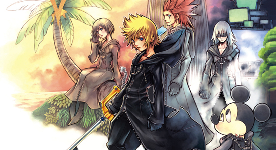
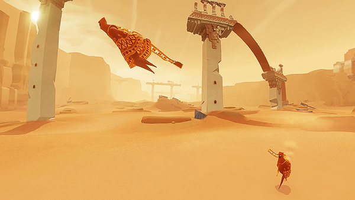
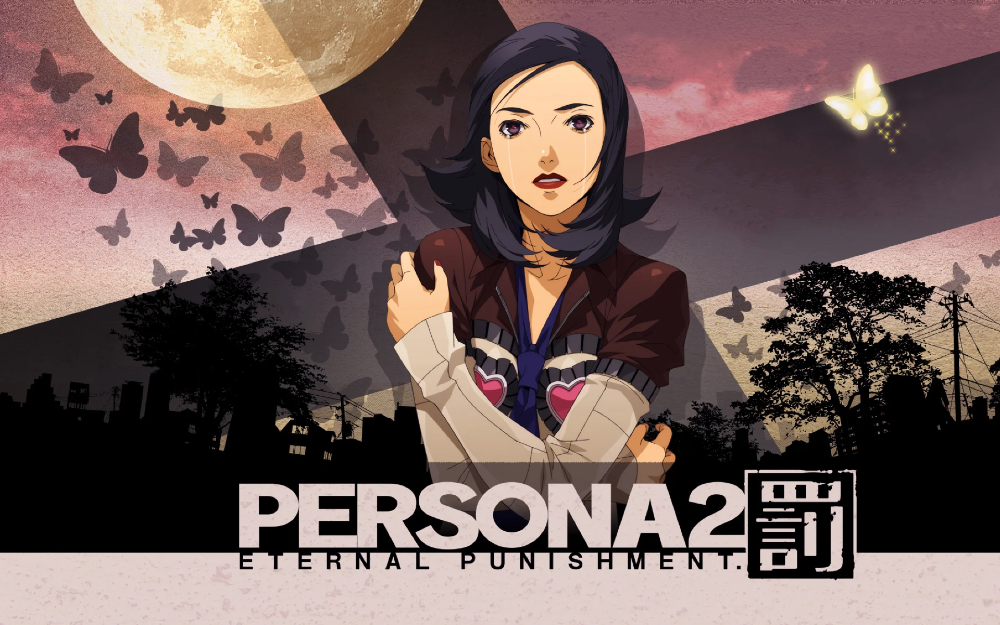
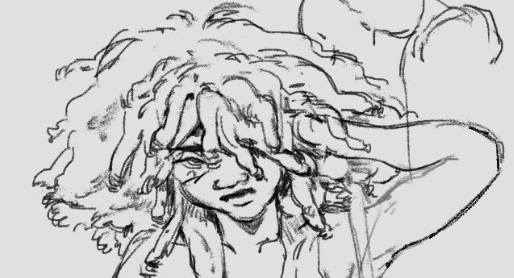
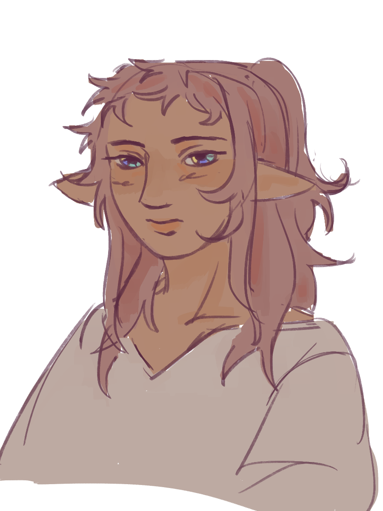
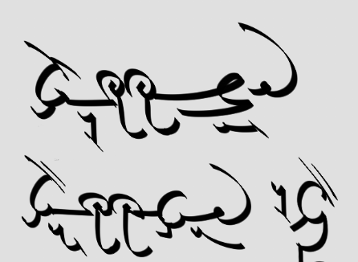
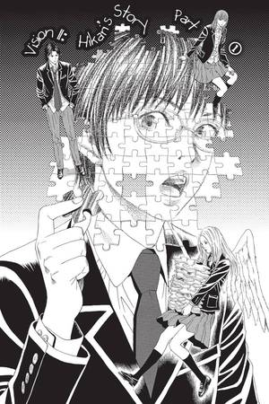

shark (or nao) is a second year game design and development university student on the internet. here, i talk about games, albums, movies/tv, and books i've played, listened to, watched, and read to document my creative designing process and my inspirations. this page also serves as a directory to other places i'm active in. come talk to me!
© 2025 nao belgrave --
totally not biased towards RPGs...
yummy!


this collection of images is a collage of some of my favorite and most beloved games. Journey especially was the game that made me want to be a game dev/designer in the first place, so it's quite dear to me.

when will you play something else?
okay, okay, i get it, there's more to games than just the same RPGs over and over again. i've a particular interest towards analog games recently...
i haven't played many rogue-likes if i'm going to be honest (a lot of them cost money).
dorakuos is the working title of a worldbuilding project i've been chipping away at for the past ~2 years. the continent contains six nations, seven distinct conlangs, and around fifteen ethnic groups, all with their own history.

what to write...


currently, i don't have serious plans to adapt this universe into other media (comics, novel, etc.) and it exists as a fun sandbox to play in.
let's talk animanga! with genkaku picasso
world's first joyful furuya usamaru manga
genkaku picasso is the third or fourth work i've read by furuya usamaru, who, rather infamously, also penned the eroguro classic lychee light club. his body of work is quite surrealist and i've become a fan.
still waiting for that amane gymnasium english licensing/scanlation... forever dropped at chapter nine.
the short-lived series carried a lot of influence from furuya's morbid and surrealist indies' works, while still managing to end on a high note suitable for Jump magazine.

i don't. i treat each jam like an extended design sprint and try to hold an hour-long brainstorming or designing session for myself each day the jam is active. most of the time, i don't end up submitting anything, and what i do have is often unfinished and subpar. this way, i'm training myself to design/develop under a deadline without the pressure of needing something finished by the end. this is also really great for portfolios!